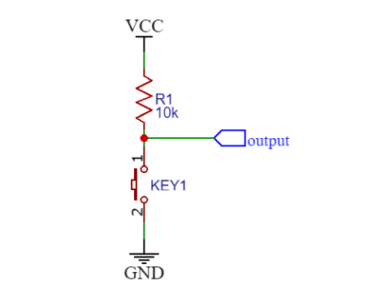
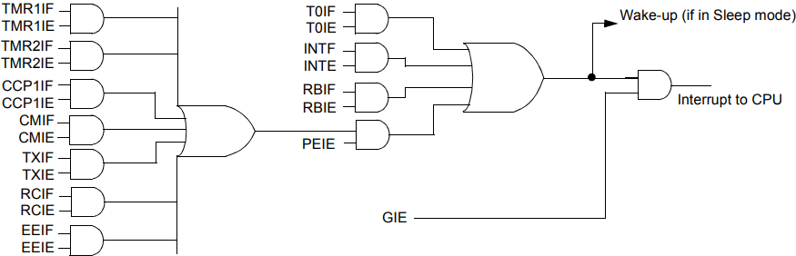

Episódio 3: Conhecendo os registradores STATUS, OPTION (OPTION_REG), INTCON, W e o registradores de uso geral para o usuário do PIC16F628A
Neste episódio veremos os registradores especiais STATUS, OPTION (OPTION_REG), INTCON e W e as suas definições e seus bits (exceto o registrador W) no qual são responsáveis pelo controle do microcontrolador (exceto o registrador W).
Começaremos o estudo pelo registrador STATUS (contido nos bancos 0, 1, 2 e 3 e endereço de memória 0x03, 0x83, 0x103 e 0x183) que é um dos registradores especiais mais utilizados, por necessidade de seleção de qual banco de memória se está trabalhando no momento e também dos estados que algumas instruções modificam.
O registrador STATUS é composto pelos bits IRP, RP1, RP0, TO, PD, Z, DC e C conforme a Tabela 3.1.
| Tabela 3.1 - Bits do registrador STATUS | ||||||||
|---|---|---|---|---|---|---|---|---|
| posição | bit 7 | bit 6 | bit 5 | bit 4 | bit 3 | bit 2 | bit 1 | bit 0 |
| bit | IRP | RP1 | RP0 | TO | PD | Z | DC | C |
| tipo-valor | R/W-0 | R/W-0 | R/W-0 | R-1 | R-1 | R/W-x | R/W-x | R/W-x |
| Fonte: MICROCHIP 2020 (b) pag. 24 | ||||||||
Na Tabela 3.1, a letra R e W em tipo-valor representam respectivamente que o bit é de leitura e escrita, enquanto que o valor 0 ou 1 representa que este é o valor inicial por um reset, enquanto que se o valor for x, representa que o seu valor é desconhecido.
O primeiro bit do registrador STATUS, é o bit IRP (Register Bank Select bit) usado para endereçamento indireto, no qual se ele for igual a 0, indexa os bancos de memória 0 e 1, isto é, serão indexados os endereços de memória de 0x00 a 0xFF. Já se o bit IRP for igual a 1, indexa os bancos de memória 2 e 3, isto é, serão indexados os endereços de memória de 0x100 a 0x1FF. Nesses episódios não trabalharemos com endereçamento indireto.
Os bits RP1 e RP0 são os bits responsáveis pela seleção do banco de registradores para acesso direto à memória, onde são definidos seus valores conforme a Tabela 3.2.
| Tabela 3.2 - Bits de seleção de banco de memória | |||||||||||||||
|---|---|---|---|---|---|---|---|---|---|---|---|---|---|---|---|
|
|||||||||||||||
| Fonte: MICROCHIP 2020 (b) pag. 24 |
Os bits TO (Time Out) e PD (Power-Down) são bits de estados relacionados a uma ocorrência de Watchdog Timerou Sleep e veremos em episódios posteriores.
Já o bit Z (Zero), é o bit responsável por expressar se uma operação aritmética ou lógica teve como resultado o valor 0. Se a operação aritmética ou lógica resultou em 0, o bit Z será setado, isto é, ficará com valor 1, caso contrário, o bit Z será limpo, isto é, ficará com o valor 0.
Antes de falarmos nos bits restantes de do registrador STATUS, temos que esclarecer o que são nibbles em um número binário.
IMPORTANTE: Um nibble é uma sequência de 4 bits em um número binário. Um número binário de 1 byte, que representa 8 bits, é composto por 2 nibbles.
Exemplo: O número 15410 escrito na base binária, é representado por 100110102, assim:
O bit DC (Digit Carry/borrow) tem seu estado modificado pelas instruções ADDWF, ADDLW, SUBWF e SUBLW, onde as regras são:
O bit C (carry/borrow) tem seu estado modificado pelas instruções ADDWF, ADDLW, SUBWFe SUBLW, e as regras para modificação do seu estado são:
Outro registrador especial é o registrador OPTION_REG (contido nos bancos 1 e 3 e endereços 0x81 e 0x181) e seus bits são: RBPU, INTEDG, T0CS, T0SE, PSA, PS2, PS1 e PS0 conforme a Tabela 3.3.
| Tabela 3.3 - Bits do registrador OPTION_REG | ||||||||
|---|---|---|---|---|---|---|---|---|
| posição | bit 7 | bit 6 | bit 5 | bit 4 | bit 3 | bit 2 | bit 1 | bit 0 |
| bit | RBPU | INTEDG | T0CS | T0SE | PSA | PS2 | PS1 | PS0 |
| tipo-valor | R/W-1 | R/W-1 | R/W-1 | R/W-1 | R/W-1 | R/W-1 | R/W-1 | R/W-1 |
| Fonte: MICROCHIP 2020 (b) pag. 25 | ||||||||
O bit RBPU é o bit responsável por ativar os estados em pull-up dos bits da porta PORTB, que será visto no episódio 4, onde RBPU é igual a 1 quando se quer desabilitar os estados pull-up dos bits de PORTB e igual a 0 caso o contrário. Note a marcação barrada em RBPU, necessitando trabalhar com lógica inversa.
Na Figura 3.1 pode-se ver um exemplo de resistor pull-up de 10 kΩ no qual faz a saída output iniciar em nível alto (valor VCC) e quando pressionado o botão KEY1, a saída ficará em nível baixo (GND - 0V) e para saber mais sobre resistor pull-up acesse https://en.wikipedia.org/wiki/Pull-up_resistor.
|
Figura 3.1 - Resistor |
|---|
|  |
| Fonte: Autor 2020 |
O bit INTEDG é o bit responsável por selecionar o tipo de borda de disparo da interrupção externa, que será vista no episódio 12. Se este bit for igual a 1, o disparo da interrupção será sobre a borda de subida e se for igual a 0, terá o disparo sobre a borda de descida.
O bit T0CS é o bit responsável por selecionar a fonte de incremento do Timer0, que será visto no episódio 14, onde ele será igual a 1 quando o clock do Timer0 advém de fonte externa no pino RA4 e igual a 0 quando o Timer0 fizer uso do clock do ciclo de instrução (clock interno).
O bit T0SE é o bit responsável por selecionar o tipo de transição quando selecionado a fonte externa (T0CS=1) no bit T0CS para o incremento do Timer0. Se o bit T0SE for igual a 1, o incremento é feito na transição de alto-para-baixo e 0 na transição de baixo-para-alto.
O bit PSA é o bit responsável por selecionar a qual periférico o Prescaler (taxa de incremento) é atribuído. Se PSA for igual a 1, o Prescaler será atribuído ao Watchdog Timer (WDT) que será visto no episódio 25 e se for igual a 0, o Prescaler será atribuído ao Timer 0.
E por último os bits PS2, PS1 e PS0, que são os bits de configuração da taxa de incremento do Timer0 ou Watchdog Timer, conforme a Tabela 3.4.
| Tabela 3.4 - Configuração da taxa de incremento do Timer0 ou Watchdog Timer | |||||||||||||||||||||||||||||||||||||||||||||
|---|---|---|---|---|---|---|---|---|---|---|---|---|---|---|---|---|---|---|---|---|---|---|---|---|---|---|---|---|---|---|---|---|---|---|---|---|---|---|---|---|---|---|---|---|---|
|
|||||||||||||||||||||||||||||||||||||||||||||
| Fonte: MICROCHIP 2020 (b) pag. 25 |
Outro registrador especial importante é o INTCON (contido nos bancos 0, 1, 2 e 3 nos endereços 0x0B, 0x8B, 0x10B, 0x18B) e seus bits são GIE, PEIE, T0IE, INTE, RBIE, T0IF, INTF e RBIF conforme a Tabela 3.5.
| Tabela 3.5 - Bits do registrador INTCON | ||||||||
|---|---|---|---|---|---|---|---|---|
| posição | bit 7 | bit 6 | bit 5 | bit 4 | bit 3 | bit 2 | bit 1 | bit 0 |
| bit | GIE | PEIE | T0IE | INTE | RBIE | T0IF | INTF | RBIF |
| tipo-valor | R/W-0 | R/W-0 | R/W-0 | R/W-0 | R/W-0 | R/W-0 | R/W-0 | R/W-x |
| Fonte: MICROCHIP 2020 (b) pag. 26 | ||||||||
O primeiro bit é o bit GIE que é responsável por permitir ou não permitir que todas as interrupções sejam executadas. Esse bit é conhecido como a chave geral de todas as interrupções e a Figura 3.2 exibe a função do bit GIE. Se o valor do bit GIE for igual a 1 (setado) é permitido as interrupções serem enviadas ao processamento pelo PIC, mas se o bit for igual a 0 (limpo), as interrupções não serão processadas pelo PIC.
O bit PEIE é o bit para ativar (valor igual a 1, setado) ou desativar (valor igual a 0, limpo) as interrupções de periféricos (Timer1, Timer2, Módulo de capturar/comparar/PWM, Módulo comparador, USART e EEPROM) e isto pode ser visto na Figura 3.2.
| Figura 3.2 - Lógica das interrupções |
|---|
|  |
| Fonte: MICROCHIP 2020 (b) pag. 109 |
O bit T0IE é o bit para ativar (valor igual a 1, setado) ou desativar (valor igual a 0, limpo) a interrupção por estouro no registrador TMR0 do Timer0 que será vista no episódio 14.
O bit INTE é o bit para ativar (valor igual a 1, setado) ou desativar (valor igual a 0, limpo) a interrupção externa no pino RB0 que será vista no episódio 12.
O bit RBIE é o bit para ativar (valor igual a 1, setado) ou desativar (valor igual a 0, limpo) a interrupção por mudança de estados nos pinos RB4 a RB7 que será vista no episódio 13.
OBSERVAÇÃO: Note que os bits acima terminam com a letra E (de Enable) e permitem ativar ou desativar as interrupções. Já os próximos bits que veremos terminam com a letra F (de Flag), que serão responsáveis por saber se a interrupção ocorreu ou não.
O bit T0IF é o bit responsável por informar se ocorreu (valor igual a 1, setado) ou não ocorreu (valor igual a 0, limpo) a interrupção por estouro no registrador TMR0.
O bit INTF e o bit responsável por informar se ocorreu (valor igual a 1, setado) ou não ocorreu (valor igual a 0, limpo) a interrupção externa no pino RB0.
O bit RBIF é o bit responsável por informar se ocorreu (valor igual a 1, setado) ou não ocorreu (valor igual a 0, limpo) a interrupção por mudança de estados nos pinos RB4 a RB7.
Outro registrador especial e importante que será o mais utilizado no software (firmware - é uma classe específica de software de computador que fornece controle de baixo nível para o hardware específico do dispositivo, conforme Wikipedia em https://pt.wikipedia.org/wiki/Firmware) é o registrador W (work) visto no diagrama de blocos da Figura 1.5 (do Episódio 1), e é um registrador de 8 bits usado pela Unidade Lógica e Aritmética (ALU) e não é endereçado como os outros registradores nos bancos. Assim, as operações aritméticas de adição e subtração e também as operações lógicas de E e OU lógico necessitam do registrador W. Porém, não somente essas operações fazem uso do registrador W, como veremos posteriormente nos próximos episódios.
Ainda neste mesmo episódio, veremos os registradores de uso geral que o desenvolvedor pode armazenar valores relativos às suas necessidades de implementação, como por exemplo a quantidade de vezes que uma certa subrotina tem que repetir, a quantidade de cliques, entre outros motivos que veremos em exemplos posteriormente.
Os registradores de uso geral do PIC16F628A estão 0x20 a 0x6F (80 bytes no banco 0), 0x70 a 0x7F (16 bytes banco 0), 0xA0 a 0xEF (80 bytes no banco 1) e 0x120 a 0x14F (48 bytes no banco 2), totalizando 224 bytes de RAM.